此篇教學文仿寫自「小蛇蛇的筆記」的「用Hexo + Github Pages搭建個人部落格」
除了是為了學習怎麼用 Hexo 及 GitHub Pages 打造屬於自己的部落格之外，也希望在過程中看看別人是怎樣寫技術文章的，並從中得到收穫。
用 npm 安裝 Hexo
1 | npm install hexo-cli -g |
裝完來測試一下
1 | hexo init blog |
居然噴出錯誤 TypeError: line.matchAll is not a function
google「上面的錯誤訊息 hexo」找到了這篇
原來是因為 12.0.0 版以後的 Node.js 才有 String.matchAll() 這個 function 啊！
那就來更新 Node.js 吧！
更新 Node.js
google「update nodejs」找到了這篇，他是這麼做的：
1 | npm install n -g # n: Interactively Manage Your Node.js Versions |
更新 Node.js 後再次測試
1 | hexo server |
出現下面的訊息就代表成功囉！
1 | INFO Validating config |
打開瀏覽器，輸入 localhost:4000
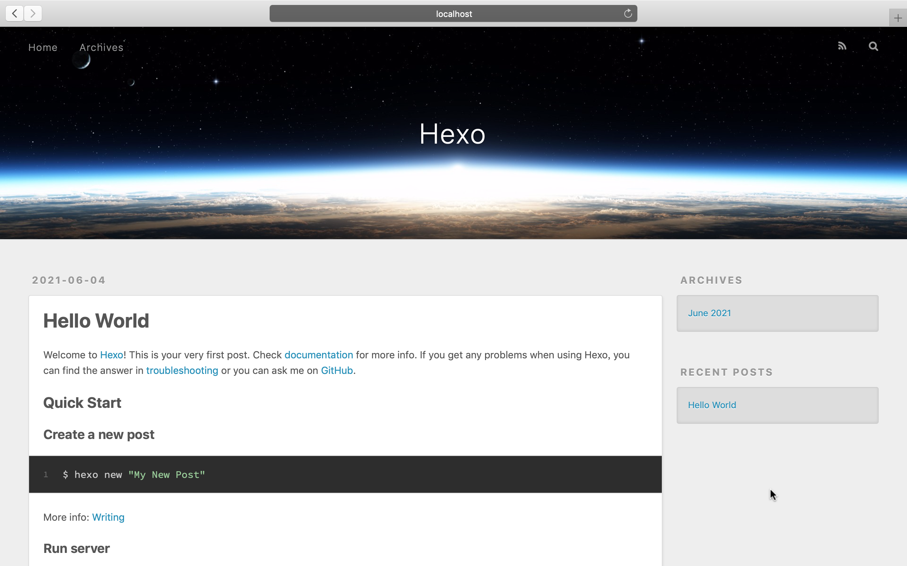
讚啦！我們的部落格誕生啦！
看一下 blog 裡面的目錄結構
用 tree -C -I node_modules 這個指令印一下它的結構：
1 | . |
不懂欸怎麼辦？不用怕！官方文檔寫得超清楚，設定的時候有不懂的地方再去查就行囉！
補充說明：
-C是為了讓印出來的內容有顏色做區別，看起來更清楚明瞭-I <pattern>則是為了排除不想要印出來的部分- tree 還有很多種 options 可以設定，詳細可以用
man tree這個指令去了解
更換主題
到這裡挑選喜歡的主題吧！
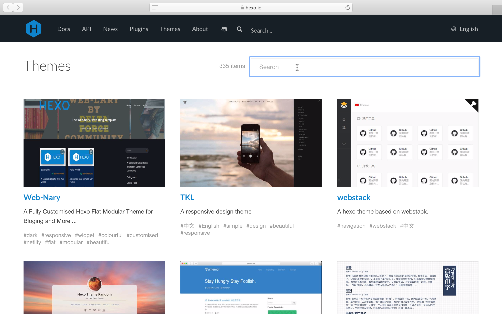
右上方有個「Search」欄位，輸入 keyword 以後可以快速找到目標主題哦！
如下：
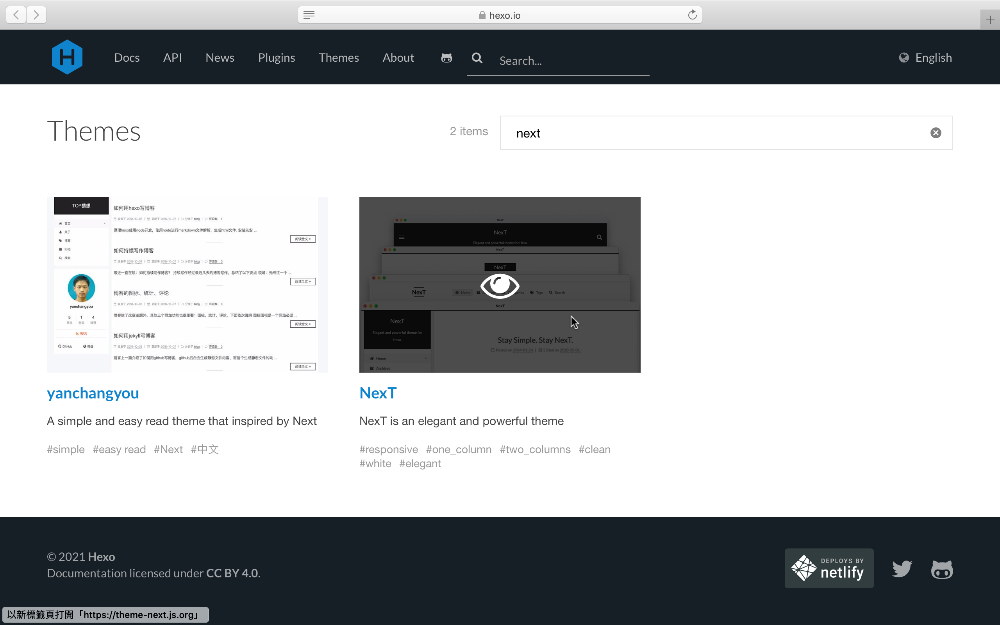
接下來就依照選定主題的文檔進行安裝啦！
（不見得每個主題都有清楚的安裝教學，可能要自己研究一下）
如果跟我一樣是選「NexT」這個主題，可以照下面的步驟安裝～
1 | cd blog |
修改一下 _config.yml 這個檔案 Extensions 的部分，把 theme 改成新主題：
1 | # Extensions |
再用 hexo server 測試看看。
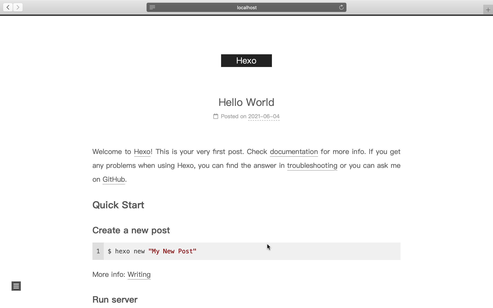
哇嗚～
成功了！We did it!
主題更換完畢～
更多關於 NexT 的設定
到 themes/next/_config.yml 去做設定吧！
更改其他樣式
這裡有 live preview 可以參考。
喜歡哪一款，去掉那一行的註解就行囉！
1 | # Schemes |
code highlight 樣式
為什要有 code highlight？
因為有了 code highlight，在文章上面分享 code 就可以被美美地呈現😀
我個人是比較喜歡 normal 啦～
1 | # Code Highlight theme |
其他設定
themes/next/_config.yml 裡面其實有蠻多註解可以協助我們做設定。
如果再有不清楚的地方，相信丟給 google 大神應該都可以順利解決～
設定作者相關資訊
設置頭像
mkdir source/images- 頭像照片放進去
- 到
themes/next/_config.yml（以下稱為 theme 的 config 檔）設定 avatar 的路徑，如下：
1 | # Sidebar Avatar |
這樣就完成頭像的設置囉！
更改網站資訊
修改 _config.yml（跟 theme 的 config 是不一樣的檔案哦，以下稱為 site 的 config 檔）
1 | # Site |
每個 setting 分別代表什麼意思可以參閱 Hexo 的官方文檔。
開啟社群帳號連結
到 theme 的 config 檔做設定，把想要開啟的連結都去掉註解吧！
（或是照著格式自己新增其他連結）
1 | social: |
新增「關於我」的頁面
hexo new page "about"修改 theme 的 config 檔，去掉 menu 底下 about 那一行的註解：
1
2
3menu:
home: / || fa fa-home
about: /about/ || fa fa-user編輯
source/about/index.md用
hexo server測試看看
如果噴出 TypeError: Cannot read property 'utcOffset' of null 這個錯誤，代表說上面在填時區的時候可能有填錯，像我原本是把時區填成 TW 😂
發表文章
新增一篇文章
先到 site 的 config 檔做個設定：
1
2# Writing
post_asset_folder: true如此一來，每當新增一個 post 的時候，Hexo 會自動幫你在
source/_posts/底下新增一個跟 post 同名的 asset folder！
這樣放圖片之類的靜態檔案會比較方便，看起來也會比較有條理。輸入
hexo new post "<title>"並編輯加圖片進文章裡面
- 先把圖片放進
source/_posts/<title>/裡 - post 裡面加上
{% asset_img (img_name) %}或是用其他像是的方式（img_name包含副檔名哦）
- 先把圖片放進
這樣文章裡面就有圖片囉 🎉
替文章加上標籤
如果之前已經建了 tags 頁面，就直接跳到步驟 4. 吧！
hexo new page "tags"編輯
source/tags/index.md，記得加上type: "tags"：1
2
3
4
5---
title: 所有標籤
date: 2021-06-04 17:29:23
type: "tags"
---修改 theme 的 config 檔，去掉 menu 底下 tags 那一行的註解：
1
2menu:
tags: /tags/ || fa fa-tags替剛剛新增的文章加上標籤
1
2
3
4
5
6
7
8<!-- 只有一個 tag 時 -->
tags: tag
<!-- 有多個 tag 時 -->
tags:
- tag1
- tag2
- tag3用
hexo server測試看看
設定文章網址格式
修改 site 的 config 檔：
1 | # URL |
還有很多種設定方式呢！詳見官方文檔～
為部落格加上搜尋功能
裝 plugin：
npm install hexo-generator-searchdb修改 theme 的 config 檔，開啟 local search 的功能：
1
2local_search:
enable: true左上方的 menu 就多了個 Search 囉！
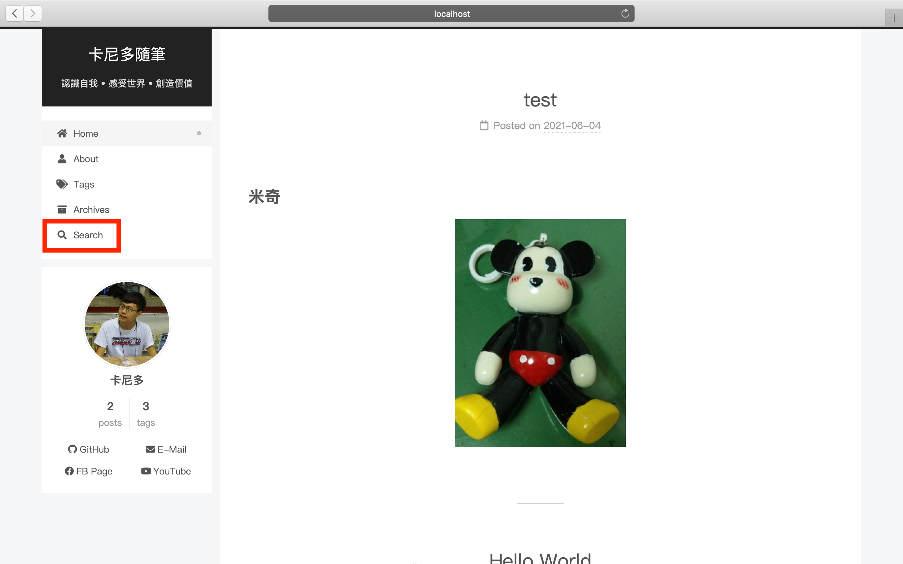
就是這麼簡單。
部署到 GitHub Pages
hexo server 以後，看到部落格美美呈現在瀏覽器上就算完成了嗎？還沒呢！
記得嗎？我們測試時輸入的網址可是 localhost:4000，這代表說只有本機端才能看得到。
所以如果想要讓網路上的大家能找到自己美美的部落格，首先必須要把部落格部署在某個地方。
其中一種很簡單的方式就是用 GitHub Pages 來部署哦！
＝＝＝＝＝＝＝＝＝＝＝＝＝＝＝＝＝＝＝＝＝＝＝＝＝＝＝＝＝＝
如果之前已經設定過了，就直接跳到步驟 5. 吧！
還沒有 GitHub 帳戶的話先去註冊一個
創建一個名為
<username>.github.io的 repository，其中<username>就是你 GitHub 帳戶的 username（交叉比對這篇和官方文檔，疑似任何 repo name 都行，不過用前面說的 name 就能直接用<username>.github.io這個網址進到部落格，比較簡單也比較直覺）裝 plugin：
npm install hexo-deployer-git --save修改 site 的 config 檔，設定網站 URL＆部署資訊：
1
2
3
4
5
6
7
8
9
10# URL
url: https://<username>.github.io
# ==============================
# Deployment
deploy:
type: git
repo: https://github.com/<username>/<username>.github.io
branch: master詳細的設定可以參閱官方文檔，還有其他種部署方式的教學呢！
清空 public 裡面的東西（如果有的話）：
hexo clean產生靜態檔案＆部署到 GitHub Pages：
hexo generate & hexo deploy
（注意：第一次使用時，如果原本<username>.github.io裡面有東西的話都會被吃掉，就連之前的 commit 也都會不見 😱）打開瀏覽器，輸入
<username>.github.io就可以看到自己的部落格囉！
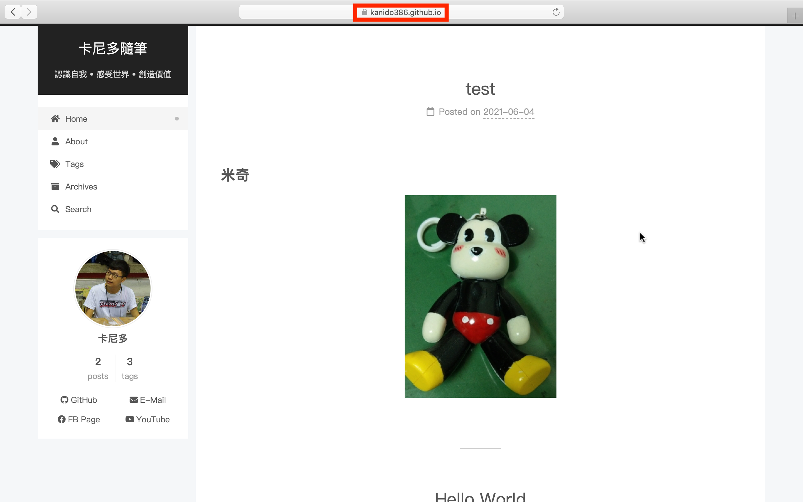
酷斃了！
加上「繼續閱讀」
非常簡單，只要在文章裡面加上 <!-- more --> 就行了！
1 | 預覽看得到我 |
用 hexo server 去查看，沒錯，多了一個「Read more」繼續閱讀的按鈕了 🎉
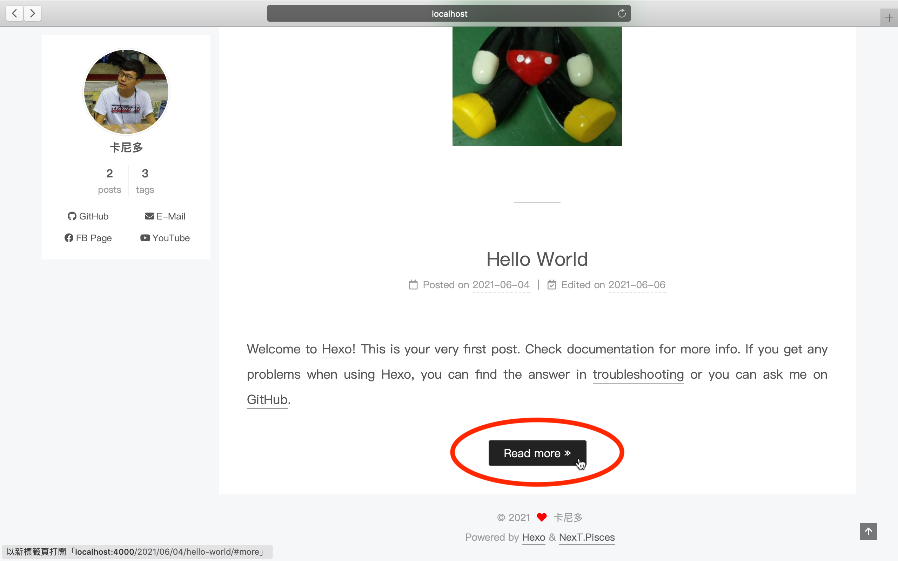
Nice!
顯示文章閱讀次數
我是參考這篇文章弄的。
（注意：文章標題中不能含有 / 斜槓符號，不然會出問題！）
建立 Firebase 專案
想要啟用這個功能，可以使用 Firebase 的 Firestore 服務，因此，先到官網註冊一下 Firebase 吧！
新增專案
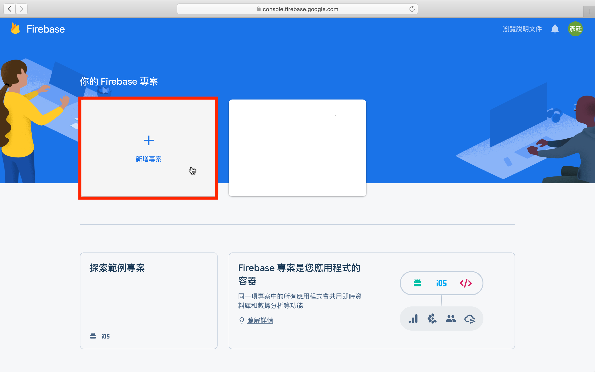
照著步驟走，即可建立一個 Firebase 專案！
產生網路 API 金鑰
進到專案裡頭，左上方有個「Authentication」，點一下，再點「開始使用」，跑完以後，金鑰就生成囉！
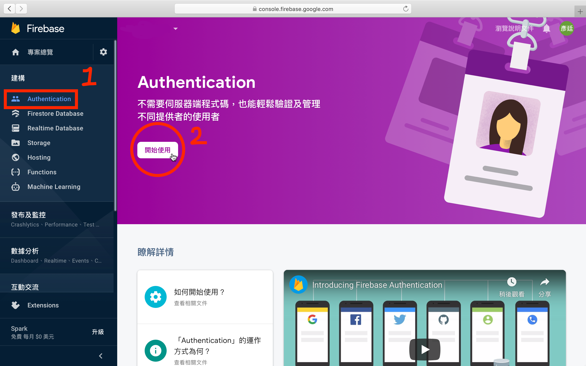
進到「專案設定」的「一般設定」查看一下～

真的有了欸！
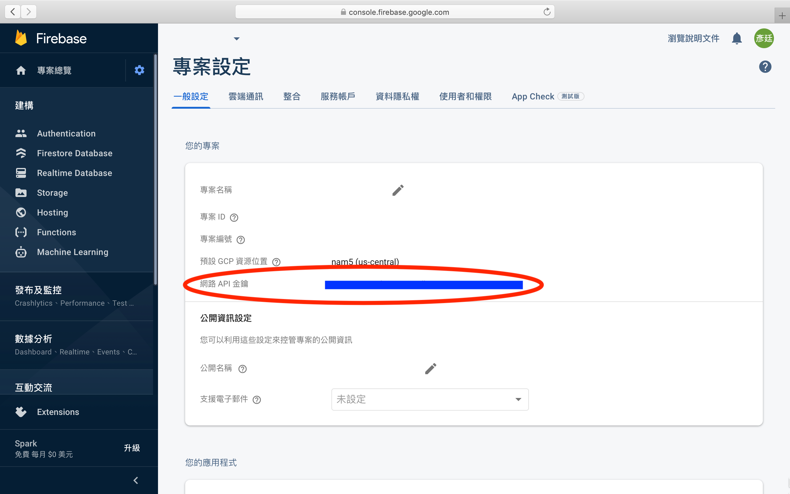
設定 Firestore
Firestore Database → 建立資料庫
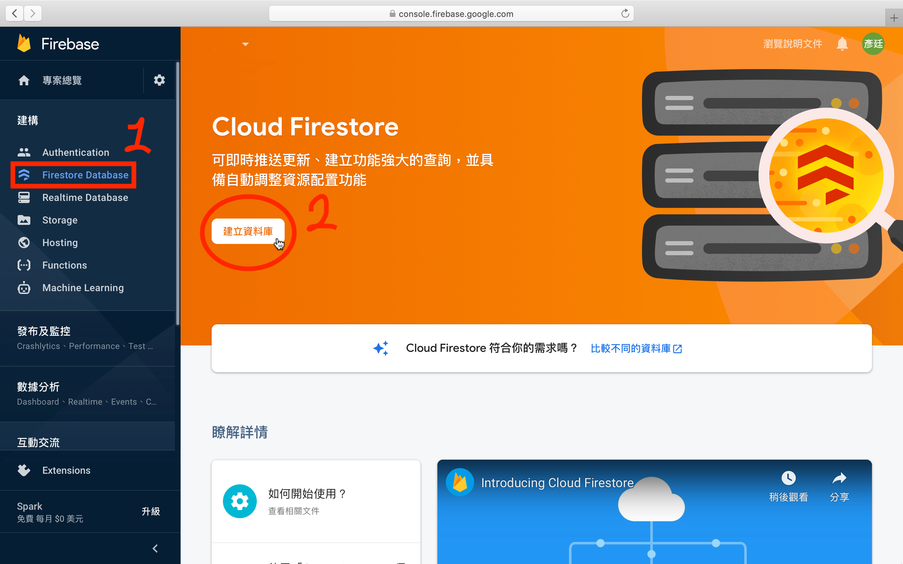
以測試模式啟動 → 繼續 → Cloud Firestore 位置選比較近的 → 啟用


編輯規則，把原本的規則改成下面的 code → 發布
1
2
3
4
5
6
7
8service cloud.firestore {
match /databases/{database}/documents {
match /articles/{any} {
allow read: if true;
allow write: if true;
}
}
}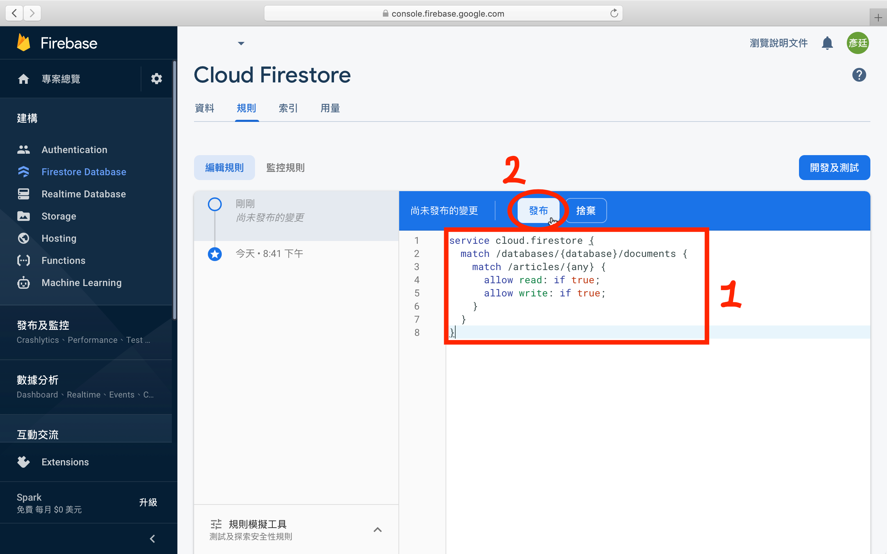
這樣 Firestore 的設定就完成囉！
開啟功能
到 theme 的 config 檔，修改關於 firestore 的設置。
除了 enable 改為 true 之外，apiKey 和 projectId 也要設定哦！
值要怎麼設定呢？到上面那一張圖的頁面去找找吧～
1 | firestore: |
測試
清空 public 裡面的東西（如果有的話）：
hexo clean產生靜態檔案＆部署最新版的 code 上去：
hexo generate & hexo deploy
（注意：localhost:4000不能測試哦！因為我們在 site 的 config 檔裡面，url 設的是https://<username>.github.io）打開瀏覽器，輸入
<username>.github.io，神奇的事情發生了！
＝＝＝＝＝＝＝＝＝＝＝＝＝＝＝＝＝＝＝＝＝＝＝＝＝＝＝＝＝＝
（點進去文章前）頁面多了個「Views」
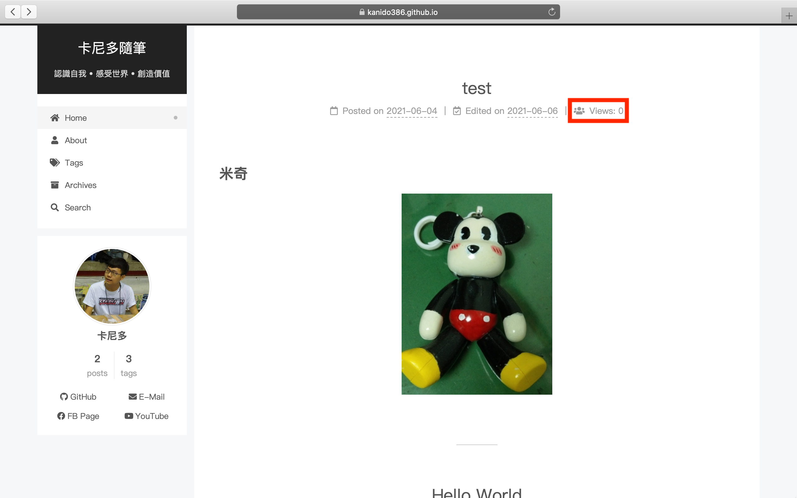
（點進去文章後）+1 了!!!
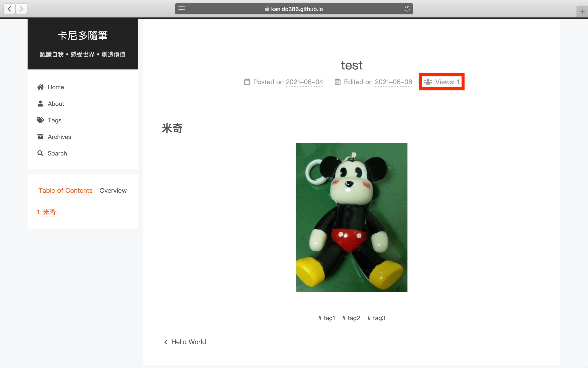
到 Firestore Database 去看到底發生了什麼事：
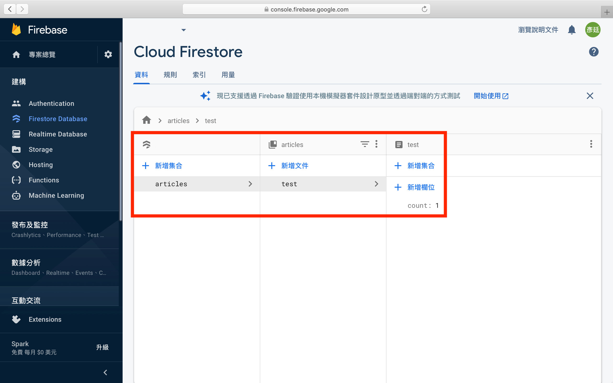
哇嗚～酷欸！
NexT 是怎麼實作的呢？
主要用的技術是 Firestore Database + localStorage。
好想知道實作細節哦！怎麼辦？
從檔案裡面找的話，應該能找到那個部分的 source code。
果然被我找到了：/themes/next/layout/_third-party/statistics/firestore.swig
聽說原本沒有 Firestore 版的「統計閱讀次數」功能，是後來有人發 PR 上去的。
所以或許我們也可以自己加上想要的功能，然後發 PR，造福自己，也造福大家！
加入 Disqus 留言板
加入留言板
註冊 Disqus 帳戶
選
I want to install Disqus on my site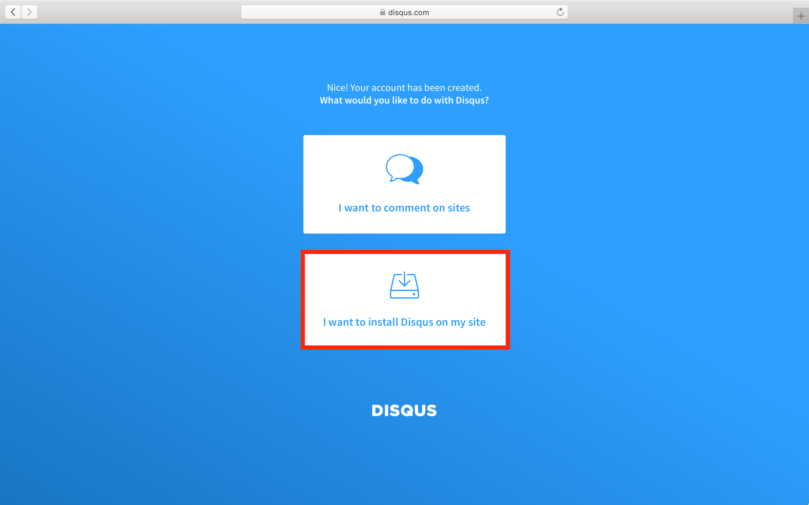
把該填的填一填，其中圈起來的部分下一步會用到
（可以點按Customize Your URL來分別設定Website Name和Shortname）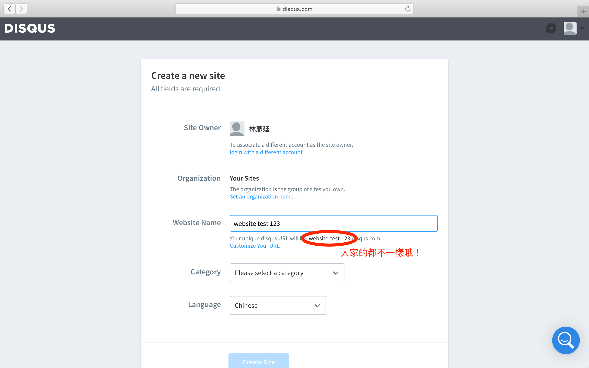
修改 theme 的 config 檔，enable 之後，把 shortname 給加上去：
1
2
3
4
5# Disqus
disqus:
enable: true
shortname: <shortname>
count: true用
hexo server去查看，酷， 文章底下有留言板囉！
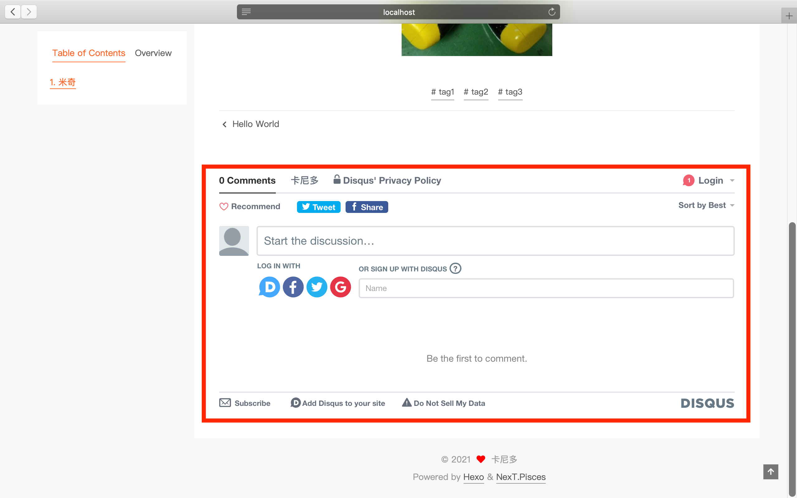
關掉某篇文的留言板
預設會在所有文章裡面加入留言板。
如果某篇文章不想要有留言板的話，在那篇文 <post>.md 的一開始加上：
1 | comments: false |
SEO（搜尋引擎最佳化）
讓自己的部落格更容易被找到！
驗證網站
在右側「網址前置字元」處，輸入網址
https://<username>.github.io後，按繼續。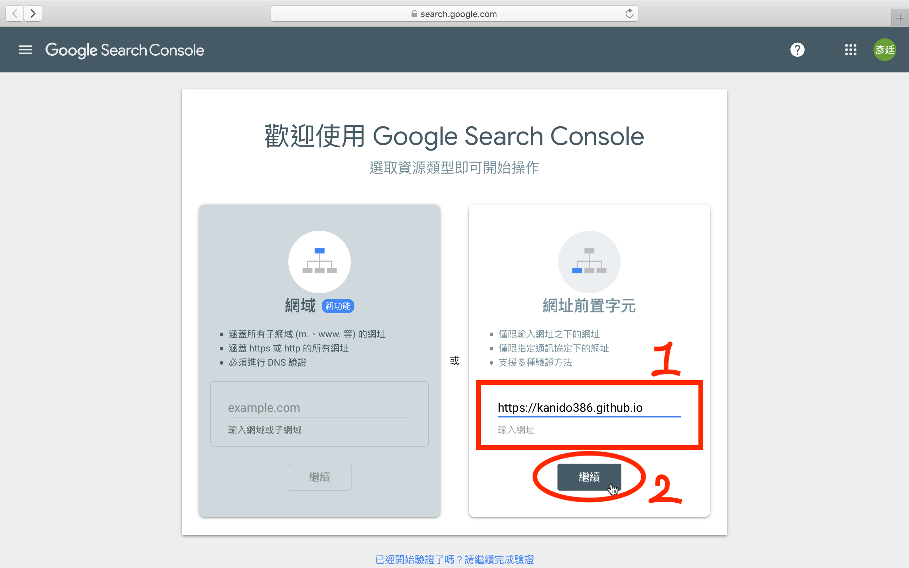
點按「HTML 標記」展開資訊卡，再按「複製」

進到 theme 的 config 檔，把剛剛複製起來 content 裡面的東西加進去
1
2
3# Google Webmaster tools verification.
# See: https://www.google.com/webmasters
google_site_verification: <content>清空 public 裡面的東西（如果有的話）：
hexo clean產生靜態檔案＆部署最新版的 code 上去：
hexo generate & hexo deploy部署最新版以後，就能驗證囉！
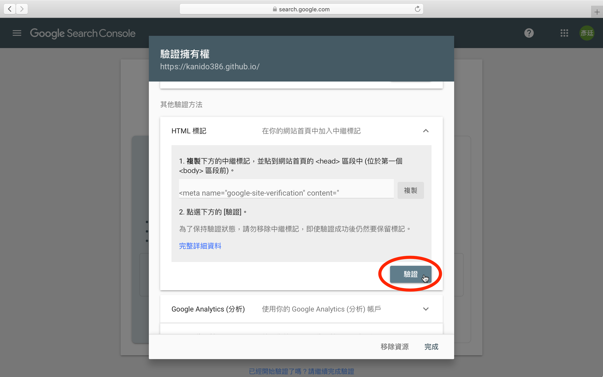
驗證完畢 🎉
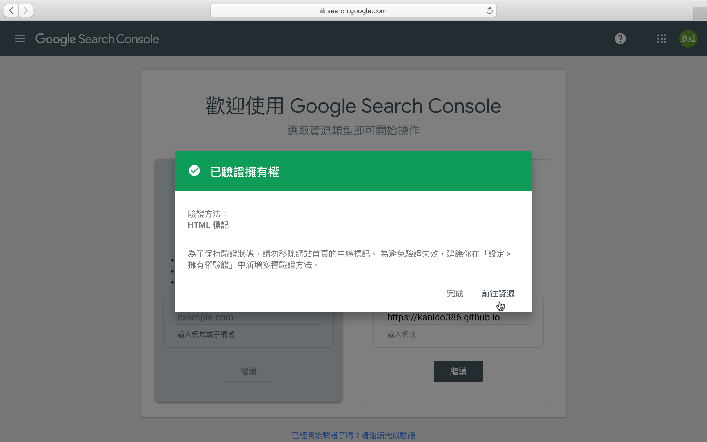
提交 Sitemap
裝 plugin：
npm install hexo-generator-sitemap --save打開 site 的 config 檔，在最後面貼上：
1
2
3# Sitemap
sitemap:
path: sitemap.xml（注意縮排，不要附屬在 deploy 底下）
產生 sitemap.xml ＆部署：
hexo generate & hexo deploy回到 Google Search Console，點左側的 Sitemap → 填
sitemap.xml→ 提交！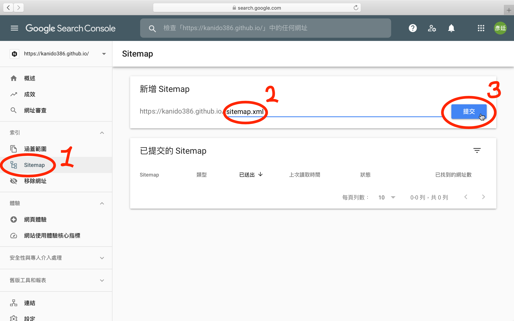
居然無法擷取⋯⋯
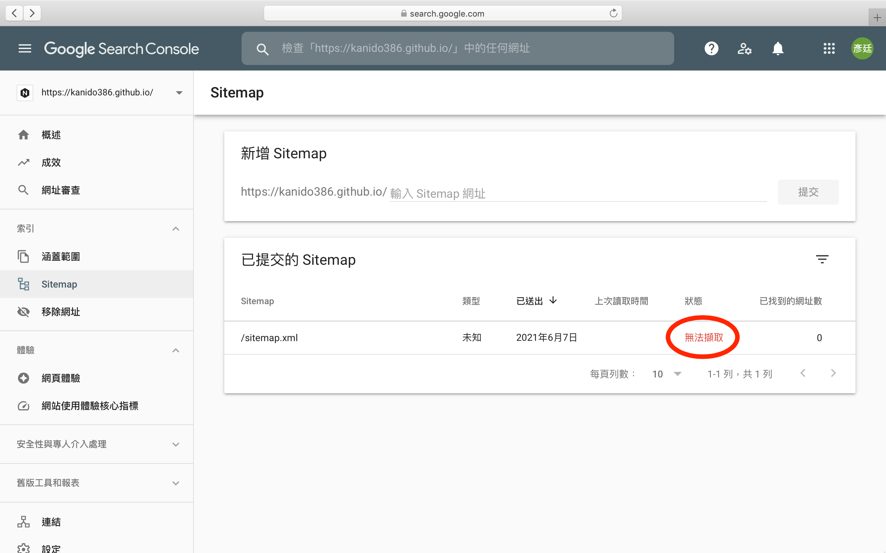
後來找到這篇，結論就是：等一周左右！
就等吧。
更新：
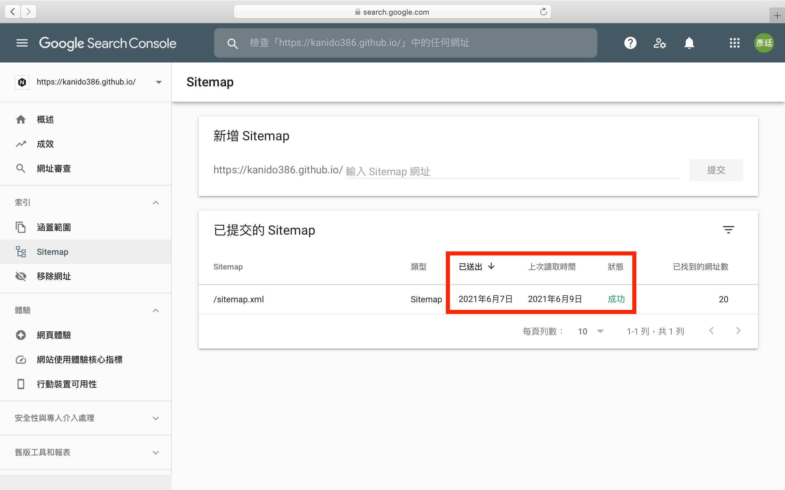
不需要一個禮拜～
希望讀完這篇文章的您能夠有所收穫，我們下篇文見啦 😃